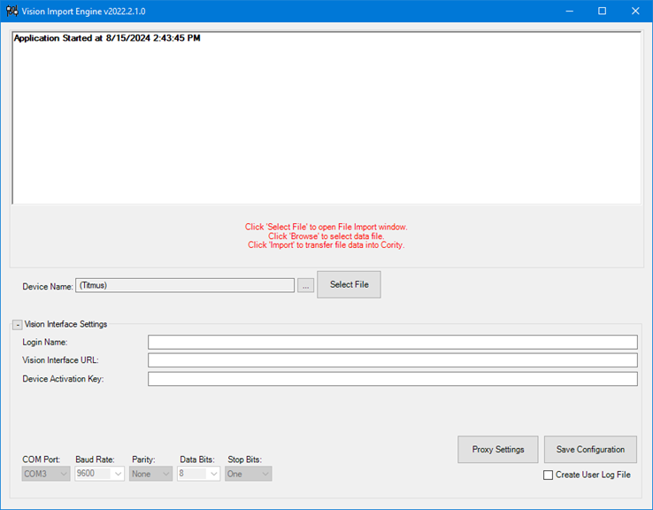
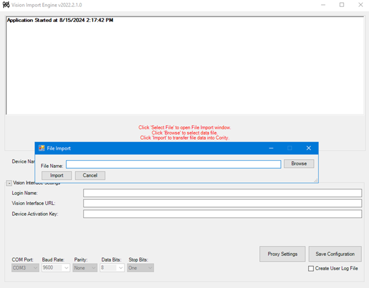

Importing Test Results from the Titmus v4 Vision Tester
This article outlines the steps required to import test results from the Titmus v4 Vision Tester into GX2.
Configuring the Vision Import Engine
Launch the Cority Vision Import Engine.
Device Name - select the Titmus v4 device created in Cority > Occ Health > Equipment.
Input the appropriate paths in the Vision Interface Settings fields:
Login Name - the Cority login name.
Vision Interface URL - the URL for the Cority application. (e.g. https://<your domain>)
Device Activation Key - to obtain the activation key, log in to Cority and then append the Cority URL with /security/retrieveapikey.rails For example, if your Cority URL is https://<your domain>, change the URL to https://<your domain>/security/retrieveapikey.rails
Click Save Configuration.

Importing the Data
Externally, open the Titmus v4 software.
In the Titmus v4 software, perform the Vision Test and save the results to a file.
Once the test has been completed on the Titmus v4, click Select File in the Cority Import Engine, select the file you just created and click import.

If you face issues while setting up and testing the interface, contact Cority Customer Support.